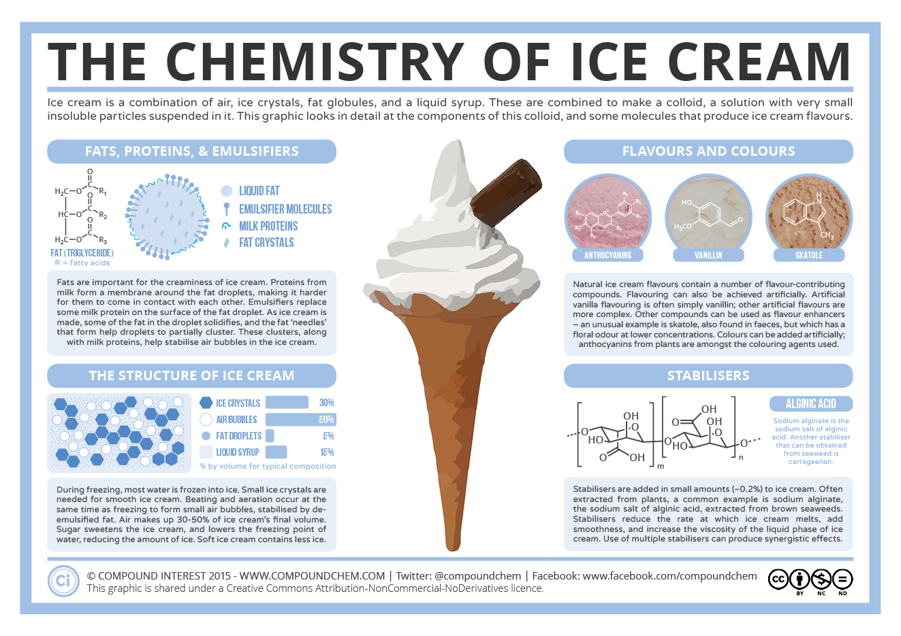

Abstract
Our Proposal
Our team desired to create an ice cream melting simulator that incorporated concepts from this course. We utilized THREE.js and WebGL to construct our simulator. We built upon basic vertex manipulation techniques to simulate a melting scoop while default metaballs were transformed to create drops. Texture mapping was used to add dimension and more realism to the ice cream simulated. Lastly, we built a GUI that would allow for users to manipulate the texture and melting speed of our ice cream.
Technical Approach
Background
We strove to create this simulator as there are not many ice cream simulators and we wanted to see if it was possible. Also the concept of a melting simulator really appealed to us as a group.
When starting out, we did a lot of research on the chemistry of ice cream, particle simulations, and melting techinques used in graphics.
Chemistry of Ice Cream:
Flavor of Ice Cream Effect on Melting Rate
Ice Cream Structural Elements that Affect Melting Rate and Hardness
Melting Concepts and Guides:
Numerical Model of Melting, Liquid Migration and Deformation
Implementation
Our goal was to cleanly simulate a solid ice cream melting as there are not a ton of realistic ice cream simulators. We decided to use Javascript and WebGL to push us out of our comfort zones.
Our original idea for creating an ice cream simulator was to implement mesh to particle and particle to mesh again after each time step of particle manipulation. In addition, we planned to incorporate the actual chemistry and food science of ice cream and how it melts under different conditions. We also wanted to add extra toppings and types of ice cream that would react in their own ways to the temperature in the scene. This proved to be too intensive for the scope and time deadline of the class and we thus decided to scale back a bit.
After feedback from the TAs, we decided to focus on just the melting effect. Instead of mesh to particle and back, using OpenGL and C++, we switched to particles and mesh manipulation in WebGL and THREE.js.
On our first pass, we got textures mapped to the ice cream sphere and cone and were able to apply a displacement map to both as well. We also got a simple simulation of particles dripping from the ice cream.
Moving on from there, we looked into both vertex and shader deformation, settling on a vertex manipulation approach. For the drops, we discovered metadrops are a really great way simulate the liquid motion we were looking for. For a nice final touch, we added a gui that would allow the user to switch ice cream flavors and speed of the ice cream drops.
Vertex Manipulation
INSERT GIF OR VIDEO
Metaballs
Metaballs are created in THREE.js using MarchingCubes.js. Metaballs are organic spheres that interact when close to each other by combining together fluidly. The spheres used to make them are changed in opacity overtime to simulate the sphere changing in shape and space. And the Marching Cubes algorithm was originally created in 1987 by Lorensen and Cline to create a mesh from an isosurface.
Three dimensional metaballs formula (from Wikipedia):

The above is expenisve to compute but the most common one used to create metaballs.
The basic structure of metaballs had the right liquidly look for ice cream drops. However, they do not act like dropping liquid by default. There is no tracking of the previous y to calculate the new position which is what is needed to create the drops we were looking for.
Thus some work needed to be done to transform the standard metaballs to ice cream drops. We changed the sinusoidal functions to update x, y, and z to be one that calculated the new y position from the former based on time. We created previous arrays to store the x, y, and z values for each blob or drop in the metaball. At start, these array were intialized to default values for x, y, and z. With drops, x was generated randomly using Math.random() to ensure they were spread out across the cone more organically. The z position never changed and could stay at zero. Y was the most important coordinate to update and started out at 1, which was the upper bound of the metaball effect generator.
Each update step after the first, y was updated by a random value between 0 and 0.5 multiplied by time. If y was below 0, it was just -0.5 * time to create a melting effect along the ground plane of the simulator.
GUI
INSERT GIF OR VIDEO
Problems and Solutions
Getting the drops to match the ice cream scoop.
Getting the drips to correctly fall: a major rehaul in calculation of metaball creation and updating had to be done to get the correct look. To get them to move correctly, we had to create arrays of previous locations that would be updated in each pass so that the next time step would be based on the previous and the next one on that step and so on. Also, figuring out how to calculate the x position to spread nicely across the top of the metaball effect frame instead of just quickly flashing back and forth.
Lessons Learned
Some text goes here.
Results
Subtitle here
Some text goes here.
References
Inspiration
Time Lapse of Melting Ice Cream
Early Style Influence
Simulating Blobs of Fluid by Peeke Kuepers
Vertex Manipulation
Metaballs
Marching Cubes Example by mrdoob
Gui
Scientific Papers
Ice Cream Textures and Graphics
Chemistry of Ice Cream Infographic
Creative Commons License for Chemistry of Ice Cream Infographic
Natalie's Tumblr????
Kisspng.com
Team Contribution
Shirley Wang
Some text goes here.
Lauren Martini
Up to the milestone, I worked on trying to get vertex manipulation to work but it ended up pulling down the whole sphere instead of just vertices.
Moving on from that, my main contribution was transforming metaballs from their default form in THREE.js to a drip effect. I started with the MarchingCubes.js made by mrdoob and manipulated the metaballs generated from that to create dripping ice cream.
Natalie Khamphanah
Some text goes here.